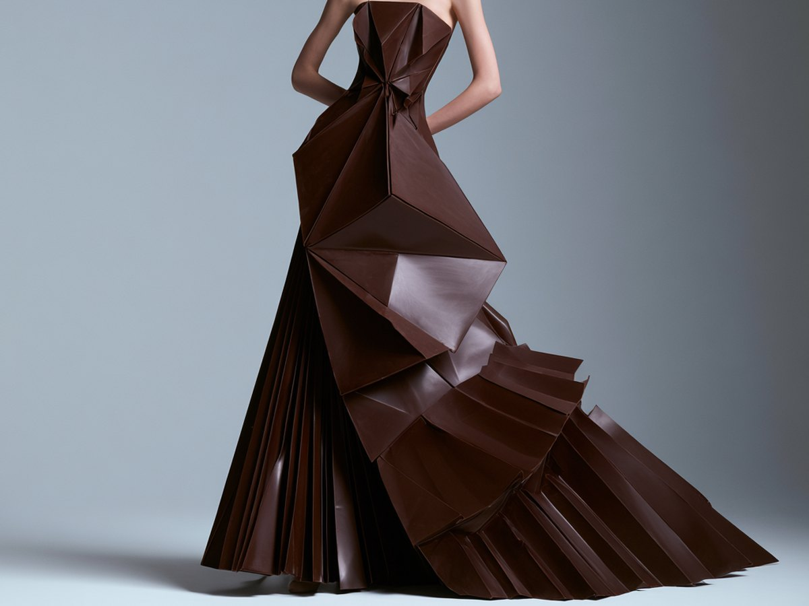
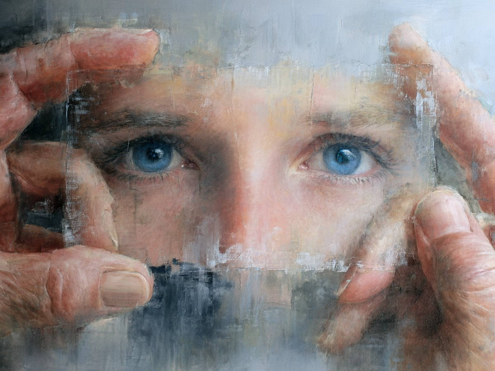

Arts visuels — Nova and I
Sept collections picturales, du kintsugi aux hautes coutures culturelles, chacune explorant ce que l'humain seul ne saurait imaginer.
En savoir plus
Musique — Les Fêlés
Avec Marie-Thérèse Lecrille — poétesse et parolière — plus de cent compositions mêlant poésie, mélodie et symbiose IA.
En savoir plus
Les Cahiers Via Gnosis
Récits et carnets illustrés accompagnant chaque création : un objet hybride où se rejoignent littérature, arts visuels et musique.
En savoir plus